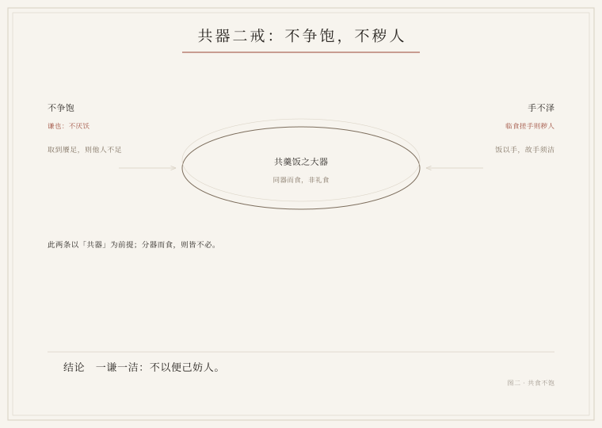

曲礼上 · 一·六十七 · 第 65 课
与人同器而食，不要吃到大饱；与人同器取饭，不要临时搓手。前者是谦，后者是洁。
说什么事：共食不饱，共饭不泽手。
落在哪一层：仪。上节讲拜，此节讲共器之节。
为何编在此位：一·六十四讲一席之终，此节转入共器；由「一人之食」入「众人之食」。
【经】共食不飽，共飯不澤手。
【注】謙也，謂共羹飯之大器也。為汗手不絜也。澤謂捼莎也。禮，飯以手。澤或為擇。
共食 疏：「共食，谓同事聚居，非礼食，则有同器食法。」所共者，羹饭之大器。
不饱 注「谦也」。疏：「共食宜谦，不辄厌饫为饱也。」
共饭不泽手 注「为汗手不洁也」。泽，捼莎，两手相搓。
礼，饭以手 注四字是本节之实：古之饭不用箸，用手取。既与人共器，手须洁净，不可临食始搓。
泽或为择 注存异文。择，拣也，亦通。
与人同器而食，不要吃到大饱；与人同器取饭，不要（临食）搓手。
两句一谦一洁。共器而食，是把自己放进众人之中：不吃到饱，是不占他人之分；不搓手，是不以己之污入众人之器。一节的道理，都是「不以便己妨人」。
第一层 共器是前提 注先说「谓共羹饭之大器」。此节不是讲一人独食，是讲同器。分器而食，则此两条皆不必。读礼先看其前提。
第二层 不饱是谦 疏用「厌饫」二字：吃到餍足，则他人不足。共食之谦，不在言语，在筷子（当时是手）停在哪一处。
第三层 不泽手是洁 疏说得直：临食始搓手，手必汗生，不洁净，「恐为人秽」。此条是卫生，也是敬人。
第四层 饭以手 注特意点出「礼，饭以手」。不明此，则「泽手」二字无从解。礼文往往系于一个已被忘记的生活事实。
与今日何干 今人共火锅、共一盘菜，仍有此二义：不把一盘吃尽，不把自己筷上的饭拨回盘中。器变了，理未变。
| 左 | 右 |
|---|---|
| 共食不饱 | 谦也；不争饱，不厌饫 |
| 共饭不泽手 | 为汗手不洁；临食搓手则秽人 |
| 共器 | 羹饭之大器；非礼食 |
| 礼，饭以手 | 古不用箸，故有泽手之戒 |
| 泽或为择 | 异文并存 |
画案上一只宽口大器（共饭之器），器中饭面已被取去一角，取处留三两道指痕；器旁一只小盂盛水，水面上有一圈未散的细纹。案面其余处干净。不画手、不画人、不写文字。赭色只在器口沿与盂沿。
